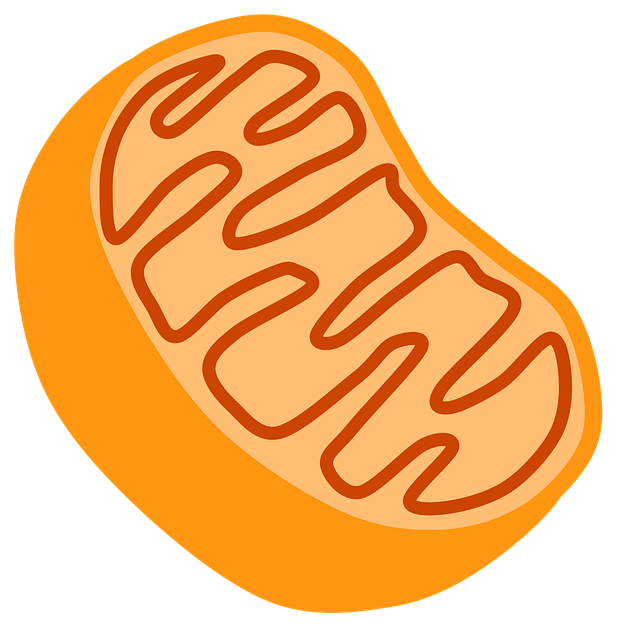

DNP ( Dinitropenol )
원리는 간단한데, 미토콘드리아가 에너지를 몸이 쓸 수 있는 ATP로 만드는 경로 자체를 끊어둬서
처먹거나, 몸에 있는 모든 지방을 싹 태워도
순수 열로 빠져나갈 뿐 ATP로 변환을 못하게 하는거임.
그럼 세포는 당황해서 무산소 당해 작용을 하는데,
얘는 효율이 16배나 그지같아서, 똑같은 양의 16배를 먹어야 일상생활 가능.
즉, 처먹은거, 처먹었던거를 전부 그냥 불태워버리면서
연비도 개 구데기인 비상발전기만 돌리는거.
근데 태우는게 지방 뿐이면 다행이지만 에너지가 순수하게 열에너지로 빠져나가서
사람 세포도 태워버리기 때문에 고열로 사망하게 됨 ( 45도 가까운 발열 발생 )
그래서 너무 위험한 나머지 판매 중단됨.
ㅇㅁㅇ